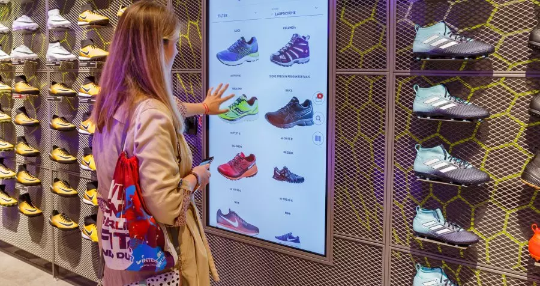

Sport Retail Data Insights
 Dataset Link Code Link1. Introduction:
The sports retail sector, situated at the intersection of dynamic market shifts, changing consumer preferences, and an expanding product landscape, faces the imperative of thriving in an environment marked by intense competition and evolving trends. Our research initiative responds to this imperative, aiming to unveil intricate patterns and predictive insights from the Sports Products Sales analysis dataset [1] to comprehensively understand the factors driving success in sports retail. Our project unfolds through stages, starting with initial data cleaning and exploratory data analysis (EDA), followed by advanced methodologies like association rule mining, time series analysis with ARIMA, and regression modeling. Each stage contributes to our overarching goal of deriving actionable insights from the dataset. Recognizing the transformative potential of machine learning and advanced analytics in reshaping operational strategies, our research is driven by the goal of providing sports retailers with a deeper market understanding. In the digital age, characterized by unprecedented opportunities, our project aims to enable effective navigation of challenges and capitalization on emerging trends. Our primary research focus is on understanding the intricate interactions influencing sporting goods sales. Utilizing Apriori association analysis, we identify co-occurrence patterns between products, providing insights into complementary relationships guiding consumer purchasing decisions. This knowledge proves instrumental in inventory control and serves as a strategic guide for product packaging and advertising campaigns. Addressing temporal dynamics in the sports retail industry, ARIMA models facilitate trend identification in sales. Retailers can enhance supply chain management and mitigate risks by leveraging temporal insights to predict and respond to market fluctuations. Analyzing complex relationships among sales-related variables, we employ various regression models, including lasso, decision trees, ridge, and linear regression, for operating profit estimation. Subsequent sections will delve into the methodologies applied, showcase key findings, and culminate in a comparative analysis of predictive models. This includes Linear, Ridge, Lasso, and the Decision Tree model which stands out as a particularly accurate and promising methodology, achieving the best score (R^2) of 0.997. These exceptionally low error metrics highlight the model's effectiveness in capturing the underlying patterns in the data, showcasing its potential as a robust solution for the given task.
2. Dataset:
The Sports Products Sales Analysis dataset employed in this project is sourced from the FP20 Analytics Challenge [1]. This dataset serves as a rich resource for delving into the complexities of the sports retail sector. It provides comprehensive insights across multiple dimensions, including details about retailers, sales specifics, geographical variables, and product characteristics.
3. Methodology
Our approach encompasses a multifaceted methodology tailored to extract comprehensive insights from the sports retail dataset. The following sections delineate the sequential stages of our methodology:
3.1 Data Preprocessing:
- The column names were renamed for consistency and clarity.
- Verified the datatypes for each variable.
- Checked null values and noticed that there are no null values in the datasets. This indicates the completeness of the dataset.
- Various categorical columns were explored to understand the distribution of data within each category.
- Handled data errors in 'total_sales' and 'operating_profit' through systematic recalculation.
- The dataset was sorted chronologically based on the 'invoice_date' column for a coherent temporal sequence.
3.2 Feature Engineering:
To enhance the predictive capabilities, the following feature engineering techniques were applied:
- Normalization: Operating profit values were normalized using MinMaxScaler, a technique that scales numerical data to a range of 0 to 1, ensuring uniformity and facilitating effective analysis, particularly in scenarios where varying scales might impact model performance.
- Date-Related Feature Extraction: Extracted additional features such as month, day, and day of the week from the 'invoice_date' column. These features can help capture variations in sales based on temporal trends.
3.3 Exploratory Data Analysis:
The Exploratory Data Analysis (EDA) process involved a comprehensive examination of the dataset to extract meaningful insights and patterns. Initial steps included renaming columns for consistency and checking data types to ensure accurate representation. Subsequent analyses investigated potential data errors and distribution patterns across various categorical variables such as retailer, region, state, city, product type, and sales method. Descriptive statistics, like value counts and summary statistics, were employed to gain a deeper understanding of the dataset's characteristics. The analysis revealed a diverse distribution of retailers, regions, states, cities, product types, and sales methods. For instance, 'Foot Locker' emerged as the most frequent retailer, 'West' as the dominant region, and 'Men's Street Footwear' as the predominant product type. Temporal patterns were explored through sorting the dataset by the 'invoice_date,' providing a chronological view of sales data. The examination of 'operating_profit,' column uncovered a wide range of values, leading to the normalization of operating profit using MinMaxScaler. Overall, the EDA process not only facilitated a better understanding of the dataset's structure and distributions but also laid the groundwork for subsequent modeling and analysis, ensuring a robust and informed approach to extracting insights from the sports retail dataset.
3.4 Association Rule Mining – Apriori
The Apriori algorithm is a classic method used for mining frequent itemsets and generating association rules in transactional data. Following is the explanation of the Apriori methodology applied:
- One-Hot Encoding: The categorical variable 'product_type' is one-hot encoded, converting it into binary format. This is a crucial step as Apriori requires binary data. Each unique category in the categorical variable is represented as a binary vector. For each category, a new binary column is created. The binary column corresponding to the category takes the value 1 if the original data point belongs to that category, and 0 otherwise.
- Creating Transaction Data: The data is then transformed into transactional format suitable for Apriori. Rows represent unique transactions identified by 'retailer' and 'invoice_date', and columns indicate whether a specific product type was present in the transaction.
- Apriori Algorithm: The Apriori algorithm was employed to identify frequent itemsets within the dataset. The algorithm was fine-tuned by adjusting the minimum support threshold to capture meaningful associations. Initially, the algorithm was applied with a minimum support threshold of 0.5, yielding no frequent itemsets and then the threshold was adjusted to 0.4, leading to the identification of frequent one-item sets. Subsequently, the threshold was adjusted to 0.3, leading to the identification of frequent one-item sets and two-item sets.
- Association Rules: Association rules were derived from the frequent itemsets using the Apriori algorithm with a minimum confidence threshold set at 0.7. These rules provide valuable insights into significant associations between different product types, contributing to a deeper understanding of transaction patterns.
- Model Evaluation Support: It computes how frequently an item or an itemset appears in the dataset.
- Confidence: It measures the likelihood that itemset B will be bought by a customer who has bought itemset A. If the confidence value is high, then there will be a strong association between itemsets A and B. The Apriori algorithm underwent tuning by adjusting the minimum support threshold from 0.5 to 0.3. Subsequently, association rules were generated, employing a minimum confidence level of 0.7.
3.5 Time Series Analysis – ARIMA
Autoregressive Integrated Moving Average (ARIMA) model is aimed to forecast operating profit over time.
- Stationarity Checks
- Augmented Dickey-Fuller (ADF) Test: The ADF test serves as a statistical measure to ascertain whether a time series exhibits stationarity or non-stationarity.
- Kwiatkowski-Phillips-Schmidt-Shin (KPSS) Test: In contrast, the KPSS test functions as another diagnostic tool to gauge the stationarity of a time series.
- Differencing and Lag order Selection: Differencing was performed to achieve stationarity, and autocorrelation functions (ACF) and partial autocorrelation functions (PACF) were used to determine the lag orders (p, d, q) for the ARIMA model.
- Model Selection and Training: The ARIMA model with the best (p, d, q) parameters was selected based on minimizing the Akaike Information Criterion (AIC). The model was trained on the dataset using a rolling window approach for out-of-sample forecasting with a window size of 100.
5. Results:
5.1 Exploratory Data Analysis
5.1.1 Total Sales and operating profit by Retailer:
Below bar plots display the total sales and operating profit for each retailer. West Gear has the highest total sales and operating profit.
5.1.2 Normalized Operating Profit over time:
Below time series plot depicts the operating profit over time which is useful before performing statistical tests to identify the stationarity of the time series.
5.1.3 Distribution of product types:
Below Pie chart displays distribution of product types. All the product types are almost equally distributed.
5.2 Association Rule Mining – Apriori
5.2.1 Frequents Itemsets – Minimum Support = 0.3
Below table represents the frequent items set with a minimum support of 0.3
5.2.2 Association Rules – Minimum Confidence = 0.7
Below table represents the Association rules with a minimum confidence of 0.7
Below Scatter plot depicts association rules support and confidence colored by lift value.
5.3 Time Series Analysis – ARIMA
5.3.1 ADF and KPSS tests before differencing:
Below are the ADF and KPSS test results before differencing. ADF test concluded that the data is stationary and KPSS concluded that the data is non-stationary.
5.3.2 Differenced Normalized Operating Profit:
Differenced the Normalized Operating Profit to make it stationary (d =1). Below is the time series plot of differenced normalized operating profit.
5.3.3 ADF and KPSS tests after differencing:
Below are the ADF and KPSS test results after differencing. Both ADF and KPSS tests concluded that the data is stationary.
5.3.4 ACF and PACF graphs:
From below Autocorrelation plot, there are 6 lags beyond significant region (95% confidence interval). Therefore, q can be tuned from 0 to 6.
From below Partial Autocorrelation plot, there are 6 lags beyond significant region (95% confidence interval). Therefore, p can be tuned from 0 to 6.
5.3.5 Model evaluation and Hyperparameter tuning:
Below output tells the best lag order (p,d,q) along with the least AIC score.
Below output displays the MSE and MAE of the best ARIMA model.
5.3.5 ARIMA model Predictions with Rolling Window:
Below time series plot displays the ARIMA model predictions with a rolling window of 100.
5.4 Regression:
5.4.1 Hyperparameter Tuning and Model evaluation:
Below table displays the best score (R^2), best params, best mse and best mae for the regression models.
5.4.2 Models vs Best Score
Below bar plot compares the best score (R^2) for the regression models. Decision Tree is the best model with the highest R^2 value of 0.9973.
Conclusion:
In this comprehensive analysis, we delved into the intricate landscape of predicting operating profit in the dynamic realm of business and finance. Employing a multifaceted approach, we explored the realms of Association Rule Mining, Time Series Analysis using ARIMA, and various Regression techniques. The findings and insights drawn from each methodology contribute to a holistic understanding of the factors influencing operating profit. The application of the Apriori algorithm revealed intriguing patterns and associations among product categories. We identified key associations, such as the correlation between Men's Street Footwear and Men's Athletic Footwear, providing valuable insights for inventory management and marketing strategies. By employing ARIMA models, we successfully captured the temporal dynamics of normalized operating profit. The optimal ARIMA configuration, (2, 1, 5), showcased the algorithm's ability to discern patterns and make accurate predictions. The results shed light on the temporal trends that businesses can leverage for strategic decision-making. The regression analysis, featuring Ridge Regression, Lasso Regression, Linear Regression, and Decision Tree Regression, underscored the significance of diverse modeling approaches. Each algorithm offered unique advantages, and their hyperparameters were meticulously tuned to achieve optimal predictive performance. The decision tree model exhibited exceptional performance, achieving a R^2 score of 0.997306, closely followed by Ridge Regression and Linear Regression. These results validate the efficacy of our models in predicting operating profit with high precision. The insights derived from this study carry implications for businesses aiming to optimize their operational profitability. The identified associations and predictive models can inform strategic decisions related to inventory management, marketing campaigns, and overall financial planning. As we conclude this project, it is essential to acknowledge that the field of predictive analytics is dynamic, and continuous refinement and adaptation are crucial. Future work could explore ensemble methods, deep learning architectures such as Recurrent Neural Networks (RNNs) and Long Short-Term Memory Networks (LSTMs), can potentially capture more intricate temporal dependencies within the operating profit data.